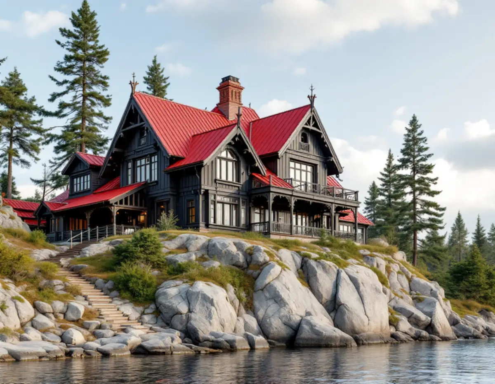
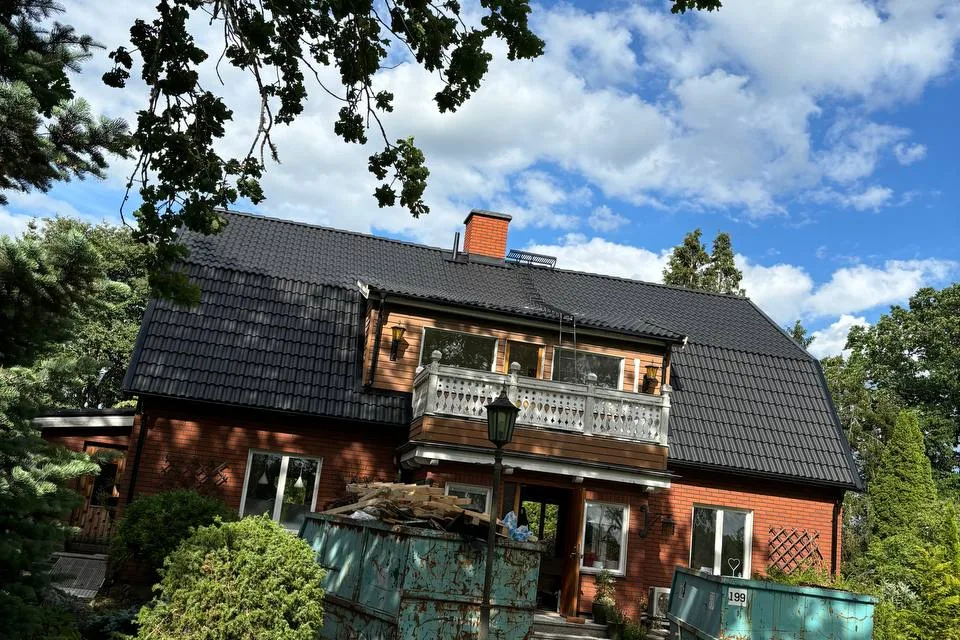

Kontroll mot karta och plan
Vi slår upp fastigheten i Nackas kulturmiljökarta och detaljplan, så att du vet om materialvalet är fritt eller kräver lov.
En takrenovering i Nacka handlar oftast om att lägga om ett befintligt tak på ett äldre trähus – nytt underlag, ny plåt och samma eller likvärdig taktäckning – eller om att förnya 60- och 70-talstak på radhus och villor. I villasamhällena längs Saltsjöbanan och vid farleden i Boo väger husets ursprungliga utseende tungt, och där börjar vi med att ta reda på vad kommunen har pekat ut.

Nackas villabebyggelse har två tydliga rötter. Den ena är Saltsjöbanan: Saltsjöbaden anlades som bad- och villastad i början av 1890-talet, och redan 1896 stod ett sextiotal villor klara. Längs banan växte fler villasamhällen fram – Neglinge byggdes i huvudsak 1895–1910, Storängen grundades 1904 av en egnahemsförening och Saltsjö-Duvnäs 1907. Solsidan bebyggdes framför allt 1930–1950, enligt kommunens kulturmiljöprogram för villasamhällena vid järnvägen.
Den andra roten är sommarnöjena vid farleden. I Vikingshill och på Tegelön i Boo byggdes sommarvillor från 1860-talet och framåt, och i skogsbackarna bakom kom enklare sportstugor under 1900-talets första decennier. Från 1930-talet styckades Sommarbo för små fritidshus, ett område som sedan fått allt fler åretruntboende.
Älta började som egnahems- och sommarstugeort på Witte & Co:s tomter i början av 1900-talet. Under 1960-talet byggdes de första radhusområdena; det första, med 25 radhus söder om Erstaviksvägen, stod klart 1968–1969 och följdes snabbt av fler.

Kommunens kulturmiljöprogram för sommarnöjena vid farleden beskriver ett skifte runt sekelskiftet 1900: schweizer- och cottagevillornas plåttak ersattes av tegeltak när den nationalromantiska stilen slog igenom. På sommarvillorna i Boo ligger därför plåt eller tegel på sadeltaken, ofta med långa, utskjutande taksprång. Samma blandning finns i villastäderna längs Saltsjöbanan.
På gamla plåttak är det sällan själva plåten som först ger upp, utan falsarna, infästningen och plåten runt skorstenen. På tegeltak åldras läkten och underlagspappen innan pannorna gör det, och därför kan pannorna ofta läggas tillbaka efter en omläggning. Funkisstugorna från 1930-talet har låga takfall, där vatten rinner långsamt och skarvar behöver vara extra täta.
Radhusen i Älta från slutet av 1960-talet har nu passerat den ålder då underlagspapp och plåtdetaljer brukar behöva förnyas. På ett radhus påverkar plåten mot grannen och vid brandväggen hela längan, så det lönar sig att se taket som en helhet. Läs mer om skillnaden mellan materialen i tegel, betong eller plåt.
Villasamhällena längs Saltsjöbanan är terränganpassade, med svängda gator, stora naturtomter och villor högt på berget eller nere vid vattnet. Hus med fritt läge mot Baggensfjärden eller farleden får mer vind och slagregn än hus i en skyddad dalgång, och det märks först på vindskivor, nockplåt och fotplåt.
Östersjöns vatten är bräckt – enligt SMHI 6–9 gram salt per kilo i Egentliga Östersjön mot 15–30 i Västerhavet – men fukt och vind från sjön räcker för att påskynda rost på dåligt skyddad plåt och skruv. På tomter med gamla tallar fylls rännor och ränndalar med barr, och mossa trivs på norrsidor i skugga.
Sedan 1 december 2025 behövs normalt inte bygglov för att byta taktäckningsmaterial eller kulör på ett en- eller tvåbostadshus. Undantagen är skyddsbestämmelser i detaljplan eller områdesbestämmelser, byggnader som är särskilt värdefulla enligt 8 kap. 13 § PBL och planer med utökad lovplikt, enligt Boverket. Ändrad takform eller höjd kräver fortfarande lov.
Nacka kommun skriver på sin sida om fasadändringar att lovplikten är utökad i områden som är särskilt värdefulla från historisk eller kulturhistorisk synpunkt. Där krävs lov för alla fasadändringar som påverkar områdets karaktär eller husets yttre. Kommunens karta visar i lila de miljöer som har särskilt höga kulturvärden, och orange betyder att en bedömning kan pågå – då ska man kontakta kommunen.
Saltsjöbaden är riksintresse för kulturmiljövården. Enligt kulturmiljöprogrammet har enstaka fastigheter skydd i mindre detaljplaner, medan stora delar omfattas av äldre planer som ofta saknar närmare regler om kulturvärden. Programmet anger också att tidstypisk utformning av bland annat tak ska behållas, och att antikvarisk medverkan kan krävas vid bygglov. Vi kontrollerar fastigheten i kartan och planen innan vi föreslår material.
På en villa från 1890-talet eller 1910-talet är en takrenovering oftast en omläggning: pannorna tas ner och sorteras, råsponten kontrolleras och lagas, ny underlagspapp och ny läkt läggs, och de hela pannorna går tillbaka. Saknade pannor ersätter vi med en modell som liknar originalet i form och kulör.
Plåtarbetet är en stor del av jobbet på dessa hus. Skorstenar, takkupor, ränndalar och fotplåt har ofta lagats många gånger, och vi gör om dem i samma utförande som husets stil. Även hängrännor och stuprör byts ofta i samma etapp.
Vinden på en gammal villa är ofta kall och dåligt ventilerad, eller isolerad i efterhand utan luftspalt. Vi ser över takfoten och luftflödet så att fukt inte blir kvar under råsponten. Om du vill jämföra en omläggning med ett helt nytt tak kan du läsa takbyte eller takrenovering, och om lokala takarbeten i stort hos takläggare i Nacka.
I ett radhusområde är taken sammanbyggda, och en omläggning på ett hus påverkar anslutningarna mot grannarna. Det gäller särskilt plåten över brandväggarna och ränndalarna mellan husen. Därför är det klokt att flera ägare i samma länga planerar arbetet tillsammans, även om var och en beställer för sitt eget hus.
Har er förening eller samfällighet egna riktlinjer för kulör eller material på taken tar vi hänsyn till dem i offerten. Det gör också att längan ser enhetlig ut när alla hus till slut är omlagda.
Vi slår upp fastigheten i Nackas kulturmiljökarta och detaljplan, så att du vet om materialvalet är fritt eller kräver lov.
Vi går upp på taket och in på vinden och noterar skick på pannor, råspont, plåt och ventilation.
För en sekelskiftesvilla föreslår vi material och plåtdetaljer i husets stil; för ett radhus samordnar vi med grannarnas anslutningar.
Många tomter i Saltsjöbaden, Solsidan och Boo ligger i sluttning, så ställningen planeras efter berg och trädgård.
Vi tar ett takfall i taget så att huset hela tiden är skyddat mot regn.
Skorsten, ränndalar och rännor görs klart innan vi går igenom taket med dig.
Rotavdraget gäller arbetskostnaden, inte material eller resor. För 2026 är det 30 procent av arbetet, högst 50 000 kr per person och år, och rot och rut får tillsammans vara högst 75 000 kr. Vi drar av beloppet direkt på fakturan.
Äger ni villan i Saltsjöbaden eller radhuset i Älta tillsammans kan ni båda utnyttja ert eget utrymme. Även ett fritidshus i Boo som du äger och själv använder ger rätt till rotavdrag, enligt Skatteverket.
Vad en takrenovering kostar i Nacka beror mest på takets storlek och lutning, hur mycket av det gamla teglet som går att återanvända, mängden plåt kring skorstenar och kupor, och hur svår tomten är att bygga ställning på. En stor villa med många takfall kräver mer arbete än en rak radhuslänga. Läs mer i vad kostar en takrenovering eller räkna på ditt tak i kalkylatorn för takbyte.
Takbyte, besiktning och plåtarbeten.
Takläggare i Nacka →Så fungerar en omläggning.
Takrenovering och takomläggning →Det här styr priset.
Vad kostar en takrenovering? →Räkna på takytan och ROT.
Takbyte-kalkylator →Skärgård, vind och fritidshus.
Takrenovering i Värmdö →Solberga, Raksta och Brevik.
Takrenovering i Tyresö →Brevik, Mölna och Käppala.
Takrenovering i Lidingö →